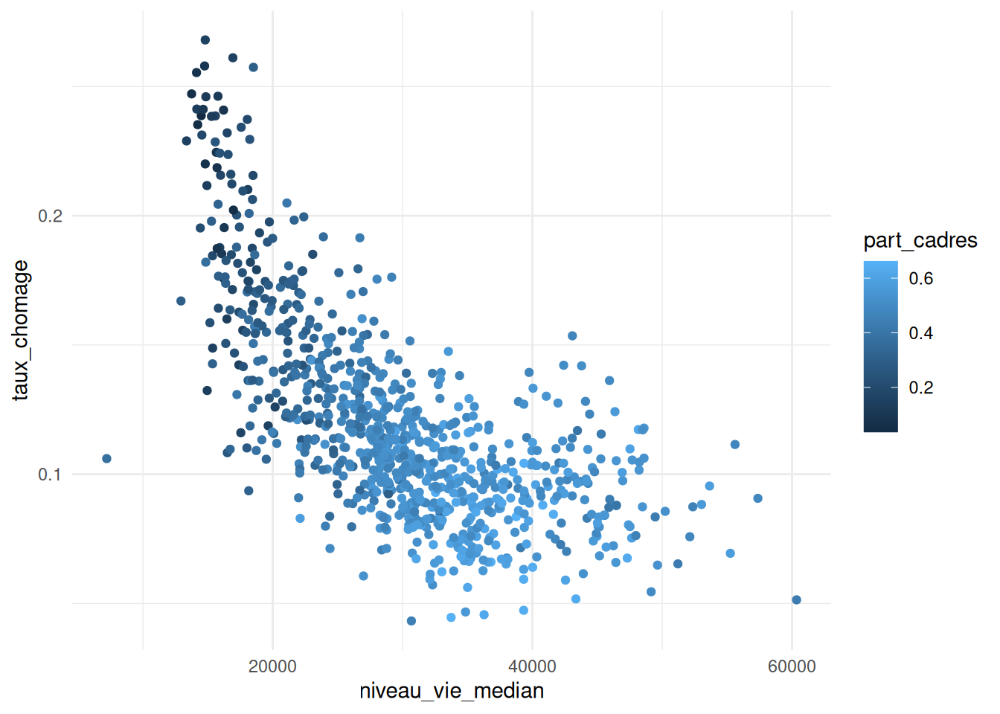

library(ggplot2)
library(doremifasolData)
data_iris_paris_2017 <- doremifasolData::data_iris_paris_2017
ggplot2::theme_set(theme_minimal())28 Faire des graphiques avec ggplot2
28.1 Tâches concernées et recommandations
L’utilisateur souhaite réaliser des graphiques (nuages de points, histogrammes, densité…) et les personnaliser (légendes, titres, échelles…).
Tâche concernée et recommandation
- Il est recommandé d’utiliser le package
ggplot2qui permet de réaliser et de personnaliser un grand nombre de représentations graphiques ; - Il est conseillé aux utilisateurs débutants d’utiliser l’add-in
esquissepour se familiariser avecggplot2.
Note
Certains exemples de cette fiche utilisent les données disponibles dans le package doremifasolData ; vous ne pourrez reproduire ces exemples que si ce package est installé sur la machine sur laquelle vous travaillez. Si vous ne savez pas si ce package est déjà installé, consultez la fiche Comment utiliser la documentation utilitR.
28.2 Découvrir ggplot2 avec l’add-in esquisse
28.2.1 A quoi sert esquisse ?
Le package esquisse propose une interface graphique qui facilite la construction de graphiques avec ggplot2. L’objectif de ce package est de vous aider à construire rapidement un code ggplot2 pour faire le graphique que vous voulez. En revanche, l’utilisation d’esquisse ne remplace pas l’écriture d’un code ggplot2, et cet add-in ne doit pas être utilisé pour réaliser et exporter un graphique sans sauvegarder le code qui le produit (sinon vous ne pourrez ni reproduire ni modifier votre graphique par la suite).
Vous pouvez en apprendre davantage sur les add-ins dans le paragraphe de présentation des add-ins.
Tip
L’interface graphique d’esquisse est assez gourmande en ressources, il est donc déconseillé de l’utiliser avec des données volumineuses (plus de 100 000 observations). Si vous êtes dans cette situation, il est fortement conseillé d’utiliser esquisse sur une petite partie de vos données (les 1 000 ou 10 000 premières lignes par exemple). Une fois que vous avez construit le code ggplot2, vous pouvez le copier-coller dans un script R et réaliser le graphique sur l’ensemble des données.
Note
L’add-in esquisse ne fonctionne qu’avec une version récente de RStudio (version égale ou supérieure à 1.2). Si votre version de RStudio est plus ancienne, vous devrez procéder à une mise à jour avant d’utiliser esquisse.
28.3 Les concepts clefs de ggplot2
L’objectif du package ggplot2 est de fournir une approche unique pour produire quasiment toute représentation graphique de données. Ce package propose un grand nombre de fonctions permettant de personnaliser finement les représentations graphiques. Cette fiche n’est donc qu’une introduction succincte à ggplot2. Pour des formations plus détaillées, se référer à {#ggplot2Ressources}.
Pour commencer, il faut charger le package avec library. Cette fiche illustre l’utilisation de ggplot2 avec la table data_iris_paris_2017 du package doremifasolData, qui contient des données économiques et sociales sur les iris de la ville de Paris en 2017.
28.3.1 Introduction
La fonction essentielle de ggplot2 est ggplot(). Il faut définir quatre éléments pour construire un graphique avec ggplot() :
- la table de données ;
- le mapping : on définit dans l’aesthetic (ou
aes) le lien entre les variables des données et ce que l’on veut représenter sur le graphique (quelle variable sur l’axex, sur l’axey, quelle variable pour définir une graduation de couleurs…) ; - la forme géométrique ou geometry : on définit la représentation graphique qu’on souhaite utiliser. Les géométries ont toutes un nom qui commence par
geom_; par exemple, il faut utiliser la géométriegeom_point()pour réaliser un nuage de points ; - les paramètres : on définit les autres paramètres qui dépendent de constantes (par exemple : je veux que toutes mes lignes soient rouges ou de taille 2 pixels).
La construction d’un graphique repose sur le principe de couches successives. Les différentes couches graphiques se superposent et s’enchaînent grâce à l’opérateur +, comme un pipe. Il est possible d’aller à la ligne dans une instruction ggplot(), il suffit que l’opérateur + figure à la fin de la ligne.
Voici un exemple de code qui crée un nuage de points (géométrie geom_point()) à partir des données mes_donnees, avec les variables variable1 en abscisse et variable2 en ordonnée :
ggplot(data = mes_donnees) +
geom_point(mapping = aes(x = variable1, y = variable2), ...)
28.3.2 Le mapping et l’utilisation d’aes()
Le mapping désigne dans ggplot2 la relation entre un attribut graphique de la geometry (abscisse, ordonnée, couleur…) et une variable présente dans la table de données. On déclare le mapping grâce à la fonction aes() (pour aesthetic), qui sert donc à identifier les variables que l’on souhaite représenter sur le graphique.
Les arguments fondamentaux de aes() sont les variables représentées sur l’axe des abscisses et l’axe des ordonnées (x et y). Par exemple, on écrit aes(x = niveau_vie_median, y = taux_chomage) si l’on souhaite représenter pour chaque iris le taux de chômage (sur l’axe y) en fonction du niveau de vie médian (sur l’axe x).
ggplot(data_iris_paris_2017) +
geom_point(aes(x = niveau_vie_median, y = taux_chomage))Par ailleurs, la fonction aes() admet d’autres arguments qui permettent de modifier l’apparence des attributs graphiques selon une troisième variable du jeu de données. Voici les arguments supplémentaires les plus courants :
| Attribut | Description |
|---|---|
color |
Couleur des lignes ou des points |
shape |
Forme des points |
size |
Taille des points |
alpha |
Transparence des points |
fill |
Couleur des surfaces |
linetype |
Type de ligne (continue, pointillée, …) |
Dans l’exemple qui suit, on représente pour chaque iris le taux de chômage (sur l’axe y) en fonction du niveau de vie médian (sur l’axe x), en colorant les points en fonction de la part des cadres et professions intellectuelles supérieures parmi les actifs de l’iris (color = part_cadres).
ggplot(data_iris_paris_2017) +
geom_point(aes(x = niveau_vie_median, y = taux_chomage, color = part_cadres))
Il est également possible d’utiliser ces mêmes arguments pour modifier un attribut graphique sans le lier à une variable. En ce cas, on définit l’attribut à l’extérieur de l’aesthetic (donc à l’extérieur de aes()). Voici l’exemple précédent, modifié pour que tous les points soient (rouge), et non en fonction d’une variable. L’argument color est donc à l’extérieur de aes().
ggplot(data_iris_paris_2017) +
geom_point(aes(x = niveau_vie_median, y = taux_chomage), color = "red")
Note
La notion de mapping et la définition des attributs graphiques à l’intérieur et à l’extérieur d’aes() sont une des principales difficultés de ggplot2. Il est normal de tâtonner lorsqu’on commence à les utiliser. Pour s’y retrouver, il suffit de suivre la règle suivante. Si on établit un lien entre les valeurs d’une variable et un attribut graphique, il s’agit d’un mapping qui doit être défini à l’intérieur de la fonction aes(). Dans le cas contraire, il s’agit d’un simple paramètre du graphique, qui doit être défini à l’extérieur de la fonction aes().
28.3.3 Les formes géométriques
La forme géométrique ou geometry désigne le type de représentation graphique utilisée (nuage de points, histogrammes…). On spécifie le type de représentation que l’on souhaite en utilisant une fonction dont le nom commence par geom_. Le tableau ci-dessous présente quelques représentations graphiques classiques.
| geometry | Description | Arguments |
|---|---|---|
geom_point() |
Nuage de points |
x, y, shape, fill, size
|
geom_line() |
Ligne |
x, y, linetype
|
geom_bar() |
Diagramme en barres |
x, fill, linetype, weight
|
geom_histogram() |
Histogramme |
x, fill, linetype, weight
|
geom_boxplot() |
Boîte à moustaches |
x, y, fill, weight
|
geom_density() |
Courbe de densité |
x, y, fill, color, linetype
|
Voici deux exemples d’utilisation.
Note
Il existe un grand nombre de géométries dans ggplot2. Vous pouvez en afficher la liste en exécutant la commande help.search("^geom_", package = "ggplot2").
Par ailleurs, de très nombreux packages proposent encore d’autres géométries pour réaliser des représentations graphiques particulières (cartes avec ggmap, arbres généalogiques avec ggtree et ggenealogy, résultats d’élections avec ggparliament…).
28.3.4 Combiner plusieurs formes géométriques
On peut représenter plusieurs formes géométriques simultanément sur un même graphique (un nuage de points et une droite de régression par exemple). il suffit de les ajouter les unes aux autres avec l’opérateur +. Voici un exemple :
ggplot(data_iris_paris_2017) +
geom_point(aes(x = niveau_vie_median, y = taux_chomage), alpha = 0.2) +
geom_smooth(aes(x = niveau_vie_median, y = taux_chomage), method = "lm")`geom_smooth()` using formula = 'y ~ x'
Note
Il peut arriver qu’on définisse le même mapping dans plusieurs formes géométriques, c’est-à-dire qu’on utilise les mêmes relations entre les variables et les attributs graphiques dans des formes géométriques différents (exemple : les variables x et y sont les mêmes dans un nuage de points et dans la droite de régression). Dans ce cas, il est possible de déclarer le mapping directement dans l’appel à ggplot() plutôt que de le répéter dans chaque forme géométrique. Le mapping sera alors valable pour toutes les formes géométriques du graphique (sauf si celles-ci redéfinissent explicitement le mapping). Le code suivant produit exactement le même graphique que l’exemple précédent :
ggplot(data_iris_paris_2017, aes(x = niveau_vie_median, y = taux_chomage)) +
geom_point(alpha = 0.2) +
geom_smooth(method = "lm")28.3.5 Créer un graphique par modalité d’une variable
La fonction facet_wrap() permet de représenter des données en facettes, c’est-à-dire décomposées par une variable de croisement. Chaque modalité de la variable catégorielle servira à découper les données pour générer un graphique. Par défaut, les échelles des axes \(x\) et \(y\) sont identiques mais il est possible de les distinguer avec le paramètre scales (qui prend la valeur "free_x" pour libérer l’axe des abscisses, "free_y" pour l’axe des ordonnées ou "free" pour les deux axes). Les arguments optionnels nrow et ncol permettent de contrôler le nombre lignes et de colonnes. Voici un exemple sur les iris parisiens :
ggplot(data_iris_paris_2017) +
geom_point(mapping = aes(x = niveau_vie_median, y = taux_chomage, color = part_cadres)) +
facet_wrap(~ categorie_arrondissement, scales = 'free', ncol = 1)28.4 Comment personnaliser un graphique
Il est possible de personnaliser un graphique ggplot2 de deux façons :
- en modifiant les options une à une (titres du graphique et des axes, graduation des axe…) ;
- en utilisant un
themeprédéfini ou en le définissant soi-même.
Avec ggplot, il est possible d’aboutir au même résultat avec plusieurs instructions, en particulier lorsqu’il est question de customisation du thème. Il ne faut ainsi pas hésiter à chercher une solution sur le site StackOverflow.
28.4.1 Les options des graphiques
Les graphiques réalisés avec ggplot2 peuvent être personnalisés finement. Chaque nouvel élément graphique est à rajouter à l’objet ggplot avec l’opérateur +.
28.4.1.1 Définir les titres du graphique et des axes
La fonction labs() permet de définir les titres : le titre général du graphique (title), le sous-titre (subtitle), la note de bas de graphique (caption), les axes (x, y)… Il existe d’autres façons de définir les titres (ggtitle, xlab, ylab).
ggplot(data_iris_paris_2017) +
geom_point(aes(x = niveau_vie_median, y = taux_chomage, color = part_cadres)) +
labs(title="Taux de chômage par iris à Paris en fonction du niveau de vie médian",
x="Taux de chômage",
y="Niveau de vie médian",
color = "Part de cadres parmi les actifs",
caption="Sources : Filosofi 2017, RP 2017")28.4.1.2 Utilisation des scales
Les fonctions scales dans ggplot2 permettent de modifier la manière dont un attribut graphique est relié aux valeurs d’une variable, et dont la légende correspondante va être affichée. L’utilisation des scales permet de définir facilement un grand nombre d’options. Par exemple, pour les attributs x et y, on peut définir la nature des variables (discrètes ou continues), les graduations, l’unité des étiquettes (pourcentage, euros…), et pour l’attribut color on peut contrôler la palette de couleur utilisée.
Pour modifier une scale existante, on ajoute à l’objet ggplot un élément qui prend la forme scale_<attribut>_<échelle>. Les attributs sont listés dans le tableau de la section @ref(mapping) (size, color, fill…). Les échelles sont listées dans le tableau suivant :
| Paramétrage | Description |
|---|---|
| continuous | gérer les variables continues |
| discrete | gérer les variables discrètes |
| date | gérer une variable au format date |
| reverse | inverser l’axe |
| log | convertir l’échelle d’une variable continue en échelle logarithmique |
| log10 | convertir l’échelle d’une variable continue en échelle logarithmique décimale |
| viridis | utiliser une palette de couleur viridis |
| brewer | utiliser une palette de couleur brewer (variable discrète) |
| distiller | utiliser une palette de couleur brewer (variable continue) |
| gradient | utiliser un gradient de 2 couleurs |
| gradient2 | utiliser un gradient divergent de 3 couleurs |
Tip
Le package scales est très utile pour mettre en forme les étiquettes des échelles (pourcentage, euro, dollar…) et est développé par les auteurs de ggplot2. Il est vivement conseillé de l’utiliser lorsqu’on veut produire des graphiques pour une publication.
Dans l’exemple suivant, on utilise deux scales :
- la fonction
scale_x_log10()pour mettre en forme l’axe des abscisses : les valeurs sont représentées selon une échelle logarithmique, qui va de 10 000 à 70 000 euros, avec une graduation tous les 10 000 euros ; - la fonction
scale_y_continuous()pour mettre en forme l’axe des ordonnées : l’axe va de 0 à 0.3, les étiquettes sont exprimées en pourcentage et on gradue tous les 5 points.
library(scales)
ggplot(data_iris_paris_2017) +
geom_point(aes(x = niveau_vie_median, y = taux_chomage, color = part_cadres)) +
scale_x_log10(
limits = c(10000, 70000), breaks = seq(10000, 60000, 10000),
labels = dollar_format(prefix = "", suffix = " €",
big.mark = " ", accuracy = 1)) +
scale_y_continuous(
limits = c(0, 0.3), breaks = seq(0, 0.3, 0.05),
labels = percent_format(accuracy = 1))28.4.1.3 Modifier les échelles de couleur
Un cas particulier de la section précédente porte sur les échelles de couleur, utilisés principalement avec les attributs color (pour la couleur des points ou des courbes) et fill (pour le remplissage des barres dans un histogramme). Il existe un grand nombre d’échelles de couleur, utilisables avec les fonctions scale_color_<paramétrage> et scale_fill_<paramétrage> :
-
scale_color_breweretscale_fill_brewerpermettent d’utiliser les nombreuses échelles de couleur du packageRColorBrewer(plus d’informations ici) ; -
scale_color_greyetscale_fill_greypermettent d’utiliser des échelles de gris ; -
scale_color_gradientetscale_fill_gradientpermettent d’utiliser des gradients de couleur personnalisés ; -
scale_color_viridisetscale_fill_viridispermettent d’utiliser les échelles de couleur du packageviridis. Ces échelles de couleur présentent deux grands avantages : elles conviennent aux daltoniens et restent lisibles lorsque le graphique est imprimé en noir et blanc (plus d’informations surviridisdans cette vignette).
Voici un exemple avec le graphique précédent, dans lequel on indique que la variable représentée sur l’axe des ordonnées est exprimée en pourcentage, de même que la variable indiquant la couleur des points. On choisit par ailleurs une autre échelle de couleur.
library(viridis)
ggplot(data_iris_paris_2017) +
geom_point(aes(x = niveau_vie_median, y = taux_chomage, color = part_cadres)) +
scale_x_log10(limits = c(10000, 70000), breaks = seq(10000, 60000, 10000)) +
scale_y_continuous() +
scale_color_viridis()28.4.1.4 Modifier la légende
Les fonctions guide() et guides() permettent de modifier finement la légende. Les guides peuvent être spécifiés dans chaque scale ou dans une instruction guides(). Voici un exemple :
ggplot(data_iris_paris_2017) +
geom_point(aes(x = niveau_vie_median, y = taux_chomage, color = part_cadres)) +
scale_y_continuous(labels = scales::percent) +
scale_color_viridis(labels = scales::percent) +
guides(color=guide_colorbar(direction="horizontal",
title.position="top",
label.position="bottom")) +
theme(legend.position = "bottom")28.4.2 Utiliser un thème
28.4.2.1 Utiliser un thème existant
Lorsqu’on veut donner une apparence homogène à un grand nombre de graphiques, il est préférable de définir un thème plutôt que de personnaliser tous les graphiques avec des options identiques. Il existe dans ggplot2 des thèmes prédéfinis que l’on peut utiliser facilement. Par exemple : theme_minimal(), theme_classic(), theme_bw(), theme_dark()… Des packages externes permettent d’enrichir cette collection de thèmes, par exemple ggthemes ou hrbrthemes.
Pour utiliser un thème prédéfini, il suffit d’utiliser la fonction theme_set()comme ceci :
28.4.2.2 Définir un thème personnalisé
La fonction theme() permet de créer des templates, c’est-à-dire de définir tout ce qui n’est pas lié directement aux données sur un graphique, notamment la position, la taille, la couleur et la police des éléments textuels (légende, titres du graphique et des axes), ainsi que la couleur des grilles primaires et secondaires du graphique. La définition d’un thème personnalisé dépasse largement le cadre de la présente fiche, mais doit vous intéresser si vous devez produire des graphiques avec une apparence homogène. Voici quelques références pour les utilisateurs intéressés :
- une introduction en français à la définition des thèmes ;
- le chapitre 9 de R Graphics Cookbook (en anglais) aborde la question des thèmes ;
- l’addin RStudio
ggThemeAssistest très utile pour se familiariser avec tous les éléments personnalisables des thèmes.
28.5 Exporter un graphique
La fonction ggsave() de ggplot2 permet d’exporter des graphiques dans un fichier externe. Les formats recommandés sont le pdf et le png. Il est néanmoins possible d’utiliser d’autres formats : eps, ps, jpeg, tiff, bmp, svg… Les options width et height contrôlent la taille du graphique. Attention, par défaut, ces paramètres correspondent à la taille de la fenêtre graphique de R, en bas à droite. Il est probable que les valeurs par défaut de ces paramètres ne vous conviennent pas, voire modifient le message de votre graphique ; n’hésitez pas à leur donner des valeurs adaptées.
Voici un exemple :
p <- ggplot(data_iris_paris_2017) +
geom_point(aes(x = niveau_vie_median, y = taux_chomage, color = part_cadres)) +
labs(title="Taux de chômage par iris à Paris en fonction du niveau de vie médian",
x="Taux de chômage",
y="Niveau de vie médian",
color = "Part de cadres parmi les actifs",
caption="Sources : Filosofi 2017, RP 2017")
ggsave("dossier/export/graphiques/graphique_iris_paris.pdf", p, width=12, height = 5)28.6 Pour en savoir plus
-
La documentation officielle (en anglais) de
ggplot2est très complète et accessible en ligne. - Une “antisèche” (en français) résumant en deux pages l’ensemble des fonctions et arguments et disponible ici.
- Les parties Data visualisation et Graphics for communication de l’ouvrage en ligne R for data science, de Hadley Wickham, sont une très bonne introduction à
ggplot2. -
Partie
ggplot2de l’introduction àRet autidyverse; -
Partie
ggplot2de la formation àRdu Ministère de la Transition écologique et solidaire. - Plusieurs ouvrages, toujours en anglais, abordent en détail l’utilisation de
ggplot2:- ggplot2 : Elegant Graphics for Data Analysis de Hadley Wickham ;
- R Graphics Cookbook de Winston Chang. Le site associé à ce dernier ouvrage comporte aussi pas mal d’exemples et d’informations intéressantes ;
- Enfin, si
ggplot2présente déjà un très grand nombre de fonctionnalités, il existe aussi un système d’extensions permettant d’ajouter des geometries, des thèmes, etc. Le site ggplot2 extensions est une très bonne ressource pour les parcourir et les découvrir, notamment grâce à sa galerie.
28.2.2 Comment utiliser
esquisseL’add-in
esquisseest disponible sous la forme d’un package, qu’il faut installer le cas échéant :Cette section illustre l’utilisation d’
esquisseavec la tabledata_iris_paris_2017du packagedoremifasolData, qui contient des données économiques et sociales sur les iris de la ville de Paris en 2017. Il faut donc charger ces données dansR:Une fois qu’il est installé, vous pouvez accéder à cet add-in en cliquant sur ‘ggplot2’ builder dans le menu Addins de RStudio.
Vous pouvez également accéder à
esquisseen exécutant le code suivant :Dans la première boîte de dialogue, vous devez sélectionner le
data.framequi contient les données que vous voulez représenter sur le graphique. Vous pouvez éventuellement sélectionner certaines variables, et modifier le type de certaines variables.Une nouvelle boîte de dialogue s’affiche, grâce à laquelle vous pouvez construire un graphique. Les variables présentes dans vos données sont listées en haut.
Vous pouvez déplacer les variables dans les différentes catégories (dans le cadre vert) :
xpour les abscisses,ypour les ordonnées,coloretsizepour la couleur et la taille des éléments graphiques…esquissevous propose automatiquement le type de graphique le plus adapté à vos données, mais vous pouvez changer le type de graphique en cliquant sur la petite icône graphique en haut à gauche (cadre rouge).Enfin, il est possible de modifier l’apparence du graphique (titres des axes, légende…) avec les menus en bas.
Une fois que le graphique est terminé, vous pouvez récupérer le code
ggplot2qui produit ce graphique en cliquant sur Export & code (cadre rouge).Vous pouvez le copier-coller dans un scriptR. Il n’est pas recommandé d’exporter directement le graphique, car en ce cas vous ne pourrez ni reproduire ni modifier votre graphique par la suite.